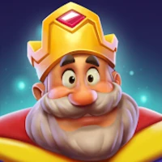
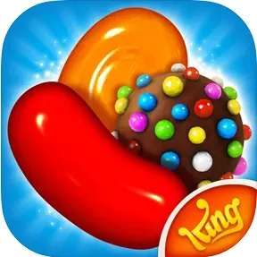
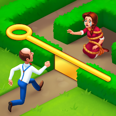
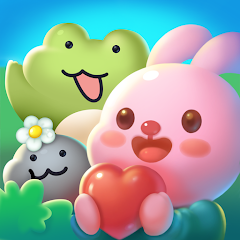

1. 매치3 경제란? "아이템을 파는 것이 아닙니다"
흔히 매치3 게임이라고 하면 '예쁜 보석을 맞추는 게임'이나 '폭탄 아이템을 돈 주고 사는 게임'이라고 생각하기 쉽습니다. 하지만 최근의 매치3 게임 체계는 완전히 달라졌습니다.
현대 매치3 경제는 아이템이라는 '물건'을 파는 것이 아니라, '실패 직전의 아쉬움(Frustration)'과 '성공의 짜릿함'이라는 감정을 팝니다.
🧠 기획자의 시선
유저가 지갑을 여는 순간은 보석을 멋지게 터뜨렸을 때가 아닙니다. "아!! 딱 한 수(Move)만 더 있었으면 깨는 건데!"라고 외치는 바로 그 순간입니다. 이 강렬한 아쉬움을 현금(유료 재화)과 교환하도록 설계하는 것이 매치3 경제 시스템의 본질입니다.
2. 하이브리드 경제: '이중 루프 시스템 (Dual-Loop)'
과거의 매치3는 단순히 1탄, 2탄 퍼즐만 계속 푸는 구조였습니다. 하지만 2023년 이후 상위권 매치3 게임의 80% 이상이 하이브리드 캐주얼(Hybrid-Casual) 경제, 즉 두 개의 경제 바퀴가 맞물려 돌아가는 '이중 루프 시스템'을 채택했습니다.
💡 일반인 해설 💡
1루프(코어)는 퍼즐 플레이입니다. 짜증과 쾌감이 반복되는 롤러코스터죠. 여기서 유저는 결제를 합니다.
2루프(메타)는 퍼즐을 깬 뒤 얻은 '별'로 죽어가는 마을을 살리거나 방을 꾸미는 겁니다. 이 꾸미기 경제 덕분에 유저는 내일도 접속해야 할 '이유(Retention)'를 얻게 되고, 재화가 너무 많이 풀려 게임이 망가지는 인플레이션(Inflation)도 막아줍니다.
3. 행동 경제학이 증명하는 유저의 지갑을 여는 마법
사람들은 왜 몇천 원짜리 커피는 꼼꼼히 리뷰를 보고 사면서, 화면 속 가짜 동전을 살 때는 1초 만에 결제할까요? 여기에는 고도의 '행동 경제학(Behavioral Economics)' 이론이 깔려 있습니다.
손실 회피
(Loss Aversion)
프로스펙트 이론 (Kahneman & Tversky)
인간은 1만 원을 얻는 기쁨보다 1만 원을 잃는 고통을 2배 더 크게 느낍니다.
게임 속 마법: 연승 보너스
어렵게 쌓아온 '부스터 장착' 혜택을 실패 한 번으로 다 잃게 생겼습니다. 이때 이어하기를 위한 코인 지출은 소비가 아닌, 내 기득권을 지키기 위한 '보험'으로 느껴집니다.
니어 미스
(Near Miss Effect)
가변 간격 강화 계획 (B.F. Skinner)
"거의 다 왔어!"라는 느낌은 뇌의 보상 회로를 강하게 자극하여, 실패를 '성공 직전 단계'로 재정의합니다.
게임 속 마법: 라스트 팡
턴 종료 시 달성 목표가 단 1개 남았고, 화면의 블록들이 부들부들 떨립니다. 과연 이 유혹을 뿌리치고 포기하기 버튼을 누를 수 있을까요?
사회적 압박
(Social Pressure)
사회적 증거와 FOMO (R. Cialdini)
개인의 실패는 참을 수 있지만, 나 때문에 우리 팀(길드)이 피해를 보는 것은 견디기 힘듭니다.
게임 속 마법: 팀 보물상자
우리 팸(Fam)이 다 같이 별을 모으는 중입니다. 내가 못 깨서 팀 목표가 실패할 위기라면? 내 지갑을 여는 명분이 '나를 위한 소비'에서 '팀을 위한 헌신'으로 격상됩니다.
4. 글로벌 TOP 게임 케이스 스터디
이론이 실제 글로벌 게임에서 어떻게 엄청난 매출로 이어졌는지 분석해봅니다.
| 분석 대상 | 경제 구조의 핵심 포인트 | 기획적 의도 및 효과 |
|---|---|---|
|
 ROYAL MATCH'"> Royal Match(Dream Games) |
"무광고 IAP 집중 모델" | 광고 수익을 과감히 포기. 광고로 인한 몰입(Flow) 단절을 제거해 오히려 엄청난 '이어하기' IAP(결제) 수익을 창출. "광고 수익 < 몰입 기반 수익"이라는 새 공식을 증명했습니다. |
|
 CANDY CRUSH'"> Candy Crush Saga(King) |
"피기뱅크 (매몰비용)" | 퍼즐을 깨서 모은 골드바 덩어리(Piggy Bank)를 얻으려면 소액결제를 해야 합니다. 유저는 잔뜩 쌓인 골드바를 '이미 내 것'이라 착각해, 이를 해금하는 행위를 '구매'가 아닌 '저축 인출'로 느낍니다. |
|
 GARDENSCAPES'"> Gardenscapes(Playrix) |
"단방향 메타 재화 전환" | 진행으로 퍼즐에서 '별'을 얻고, 정원을 꾸밉니다. 중요한 건 별을 영원히 꾸미기에만 쓰고 퍼즐 아이템인 폭탄으로 되돌릴 수 없다는 겁니다(단방향성). 덕분에 경제가 붕괴(인플레이션)되지 않습니다. |
|
 애니팡 4'"> 애니팡 4(위메이드 플레이) |
"극대화된 소셜 밸런싱" | 한국 유저 특유의 공동체 성향을 분석해 '팸(Fam)' 대항전을 도입. 하트를 주고받으며 접속(Retention)을 유도하고, 개인의 스테이지 클리어를 소셜 기여 영역으로 확장해 코인 가치를 높였습니다. |
5. 2024–2025 최신 트렌드 데이터
현재 모바일 시장은 CPI(유저 획득 비용)가 폭등하고 있습니다. 매력적인 광고로 데려온 매치3 유저 한 명 한 명이 소중해졌으며, 이 기조가 데이터로 나타납니다.
점점 '한 우물'만 파는 순수 매치3는 살아남기 힘들어지고, 인테리어/건축/이야기가 섞인 메타 결합형이 시장의 75% 이상을 잠식하고 있습니다. 또한 최상위 개발사들은 DDA(동적 난이도 조절) 인공지능을 도입해, 유저가 재화를 많이 쌓아두면 티나지 않게 난이도를 아주 살짝 올려 보유 재화를 다시 쓰게(Sink) 유도하고 있습니다.
6. 기획을 증명할 정량적 잣대: 재화 가치 공식
기획자는 직감으로만 난이도를 정하지 않습니다. 모든 것은 지표(Metric)로 설명되어야 합니다.
- 가치 침식 방어: 유저에게 너무 많은 무료 보상을 퍼주면 재화 가치(V)가 하락하여 결제를 아무도 하지 않습니다.
- 기간제 보상(Time-limited Value) 도입: 영구적으로 쓸 수 있는 폭탄을 주는 대신 "30분간 하트 무제한" 혹은 "15분간 무한 폭탄"을 줍니다. 이는 게임 내 인플레이션을 막고 유저의 즉각적인 몰입 세션을 강제하는 현재 시장의 핵심 룰입니다.
🎙️ Antigravity's Insight : 실패의 가치를 설계하다
"훌륭한 기획은 유저에게 '운이 나빠서 열받는다'가 아니라, '아까워서 미치겠네 한 판만 더 하자!'라는 긍정적 결핍을 안겨주는 것입니다."
제가 주목하는 지수능력은 Sink Efficiency (재화 소모 효율)와 Golden Fail Point입니다.
- 단순히 어렵게 만드는 것이 능사가 아닙니다. 유저가 무심코 이어하기를 눌러버리는 '결제 전환 마의 구간(Golden Fail Point)'은 "미션 1~2개 남김 + 화면에 특수 유도 블록 1개"의 상관관계를 가집니다. 이를 데이터 로그로 수집하여 스테이지 레벨 디자이너의 가이드라인으로 피드백해야 합니다.
- 매치3의 밸런싱 검수는 단순한 클리어율이나 재화 소모율 확인을 넘어, 데이터 뒤에 숨겨진 '유저의 좌절감이 어떻게 성취의 쾌감으로 치환되고 있는가'를 증명하는 논리적 장치가 되어야 한다고 확신합니다.
참고 문헌 및 출처 (References)
- • "Near-miss effects in Candy Crush Saga" - NIH 다수 연구, 생리적 각성도 논문
- • "Analyzing the Monetization of Play: Virtual Goods Models" (2016)
- • "Difficulty and User Retention in Mobile Match-3 Games" - Lund University
- • GDC Vault - "The Economy of Casual Games" (Playrix, King Post-mortems)
- • Deconstructor of Fun - "Royal Match analysis" by Michail Katkoff
- • Sensor Tower 2024 Market Report / Adjust Mobile Gaming Report 2024